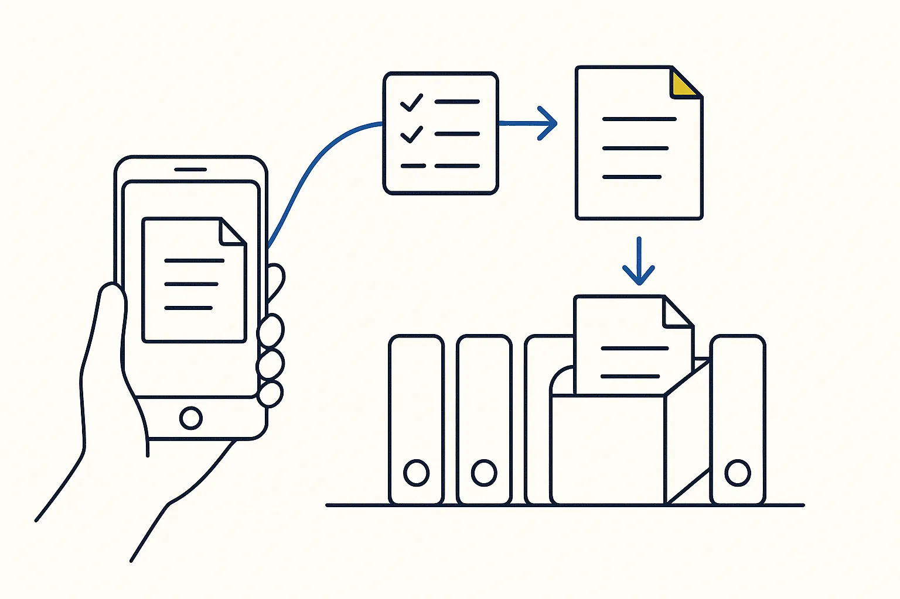
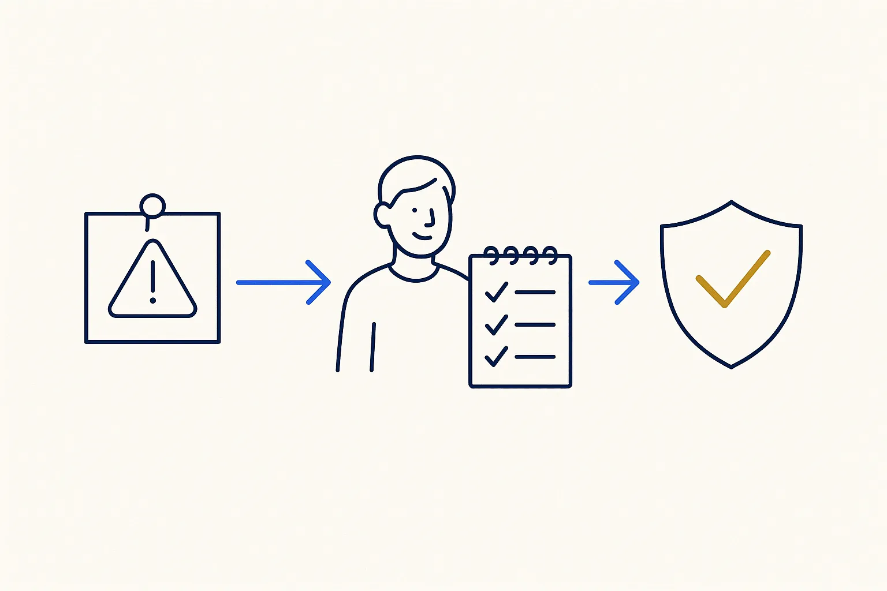
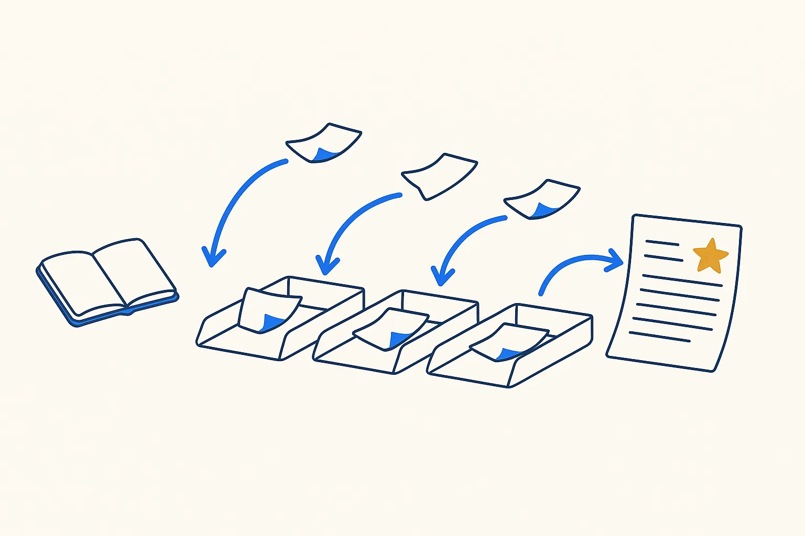
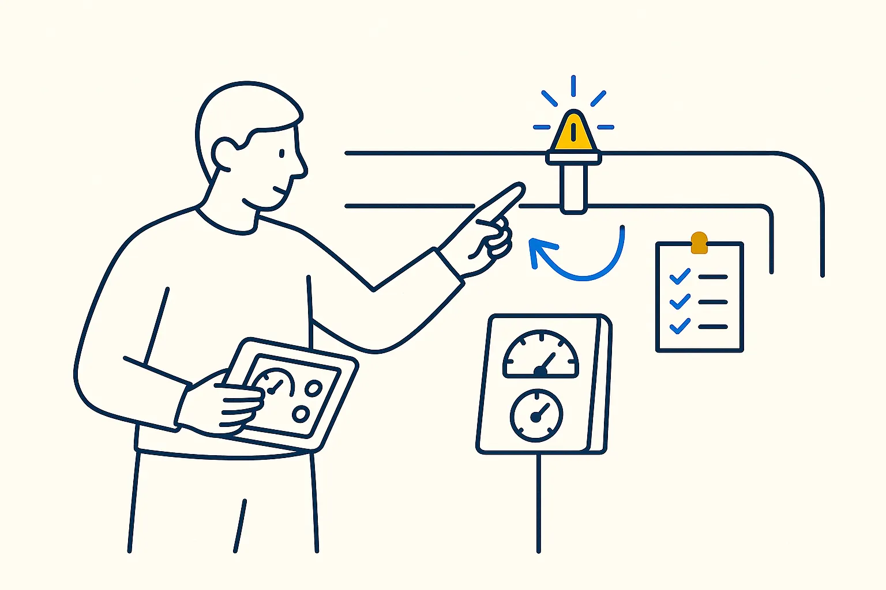
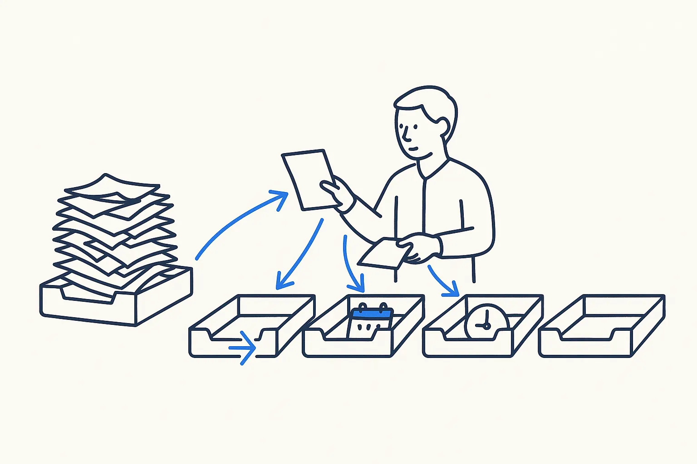

Knowledge and working habits · book
The Checklist Manifesto
A checklist is not a lack of expertise; it is what expertise does when the stakes are real.
Atul Gawande · 2009
What the book is about
Atul Gawande, a surgeon, shows how simple checklists cut errors in operating rooms, aviation and construction. Not because the experts are careless, but because complex work has too many steps to hold in one head.
Ideas I took from it
- A checklist is what expertise does when the stakes are real. Half my working method is downstream of this.
- Keep it short. A checklist covers the steps people actually skip, not everything they know.
- Make it a pause point. The check happens at a fixed moment, not "whenever you remember".
On a Build Day
A runbook or a rules file for your AI tool is a checklist: the steps the AI must take, and the checks it must pass, written down once.
Links
Concepts behind it
- Runbooks — A repeatable procedure written down so a task is done the same way every time.
- Guardrails Are Layers — A guardrail is not one filter at the end. It's seven checkpoints with different jobs — and the one everyone skips is memory.
- Hooks Over Hopes — Every instruction to a model is a probability, not a promise. Rules that must always run belong in deterministic automation the model can't skip.
Used in these use cases

From phone scan to the right folder, named and indexedA scan on the phone arrives in an inbox folder; one instruction routes it to its proper place, with a proper name and a metadata file.
Incident management that turns every failure into a ruleEvery disruption — a failed import, a broken page, a dispute with a supplier — becomes a small file with an owner, a status and a lesson. The lesson becomes a rule, so the same failure does not come back.Related articles
- A Proof of Concept Is Not a Product — and That Is the Point
- Vibe Coding Without the Hangover
- Stop Prompting, Start Directing: Claude for Your Vault — Structure Beats Magic
- Build Your First Skill: The Anatomy, Start to Finish — Structure Beats Magic
- Prompts, Skills, Plugins, MCP — Which Tool, When — Structure Beats Magic
- Skills Are the Unit That Compounds — Structure Beats Magic
- Red-Team Your Own AI (Before It Just Flatters You) — Structure Beats Magic
- The Image-Integrity Gate: I Caught My Own Site Faking It — Structure Beats Magic
More in Knowledge and working habits

Building a Second BrainTiago Forte · 2022Capture, organise, distil, express. A personal knowledge system is the smallest version of a company brain.Read more →
Extreme OwnershipJocko Willink & Leif Babin · 2015If you build it, you own it — including the import that silently stopped running.Read more →
Getting Things DoneDavid Allen · 2001The original inbox discipline: everything gets captured, clarified and given one next action. Email triage starts here.Read more →